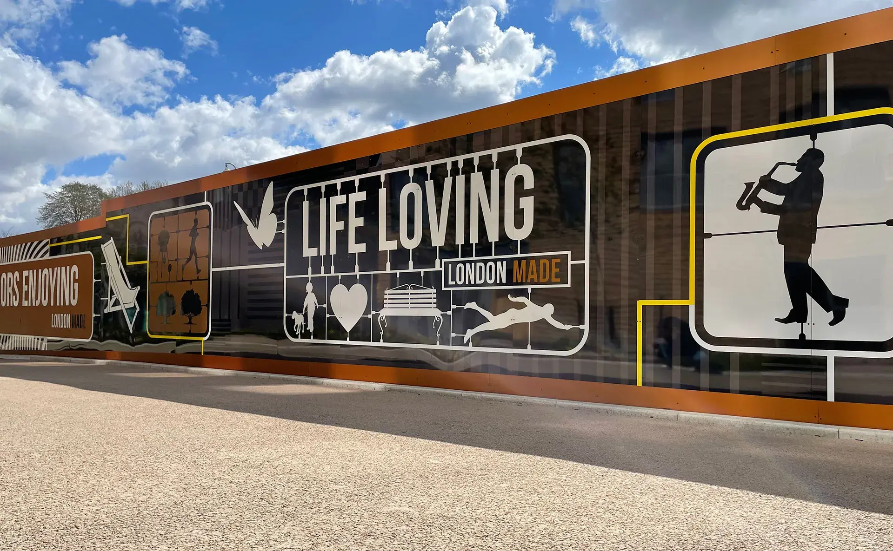
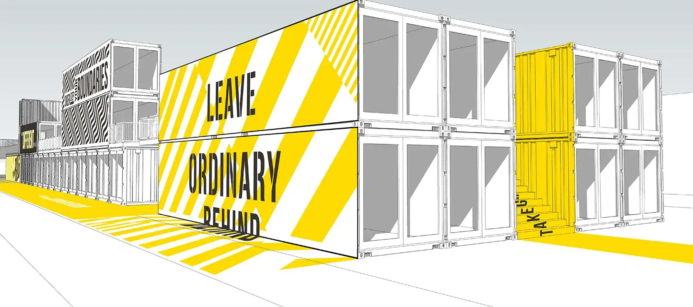
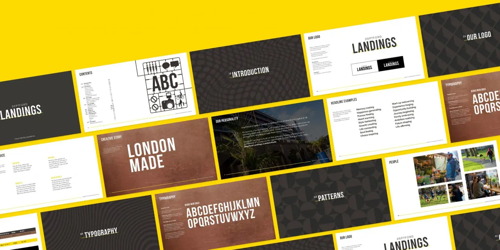

Brand identity & copywriting
Deptford Landings
New brand ID for a residential development and meanwhile use in Deptford, London. Winning hearts and minds through effective storytelling.
The work
Challenge
Deptford Landings, previously The Timberyard, was having a reputation crisis. The independent makers spirit that has grown up around Deptford was wary of the credentials of this new development on their doorstep. Our invention: London Made.
Deptford Landings is London through and through. 1132 beautiful new homes with glorious gardens and parkland views, just yards from market-leading stores, emerging local independent retailers, artisans, and local entrepreneurs. A vision of modern life, seamlessly integrated with a proud and colourful community. The next chapter in a story of reinvention where anyone can be anything and everything is possible. Life lived here will be the making of you.
We created a brand that would hero what Deptford Landings was putting back into the community. Harnessing the history of the area as a shipyard, and blending it with the contemporary personality of a special part of London.
A storytelling device that ran across meanwhile use, hoardings, and sales materials.


